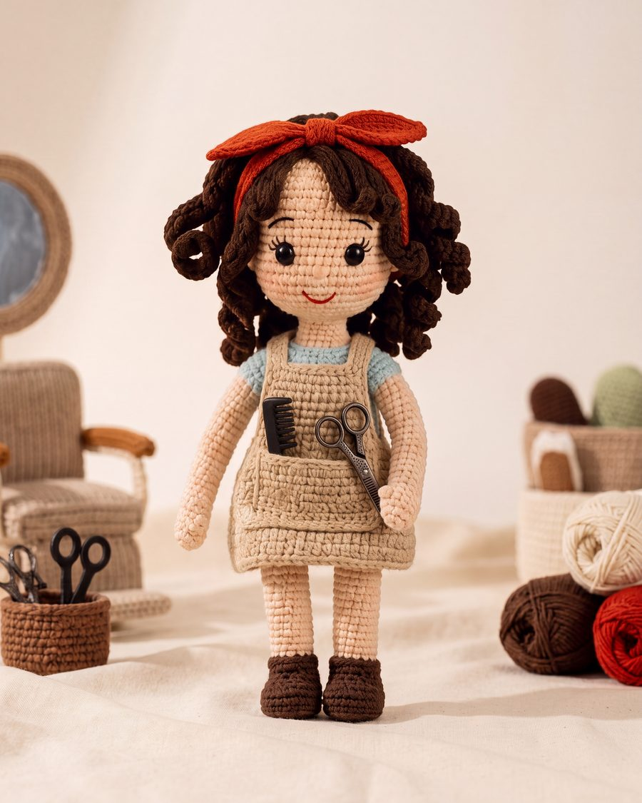
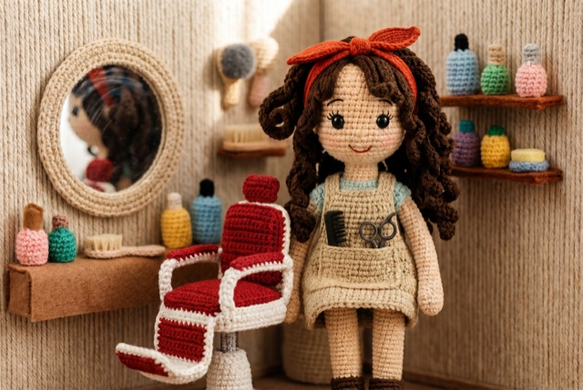
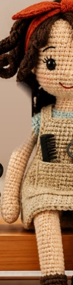

03 — Berber Dükkânı
Yaratıcılığın ve emeğin cinsiyeti olmaz.



Harbie Koleksiyonu
Harbie Berber
"Yaratıcılığın ve emeğin cinsiyeti olmaz."
Mavi elbisesi, krem önlüğü ve el emeği aksesuarlarıyla estetiği ve el becerisini eşitlikle harmanlar. Bir makasın ustalığı da, bir fikrin güzelliği de kimsenin tekelinde değildir; yaratmak isteyen her el ustalaşabilir.
Bu berber, Hatay'daki İyiliğe Bir İlmek Atölyeleri'nde, ellerinin becerisini bir sanata dönüştüren kadınların elinden çıktı. Örgü de tıpkı bir zanaat: sabır, göz ve ustalık ister. Onu ören eller, emeğin ince işçiliğinin bir kadına hem gurur hem geçim getirdiğini; güzelliğin el emeğinden doğduğunu biliyor.
Berber Harbie, çocuğun ince motor becerilerini, yaratıcılığını ve başkasına özen gösterme duygusunu besler. Rol yapma oyunlarında bakım vermeyi, estetik algısını ve el işçiliğine saygıyı öğretir. %100 pamuklu, anti-alerjik dokusu küçük ellerin yaratıcı oyununa güvenle eşlik eder.